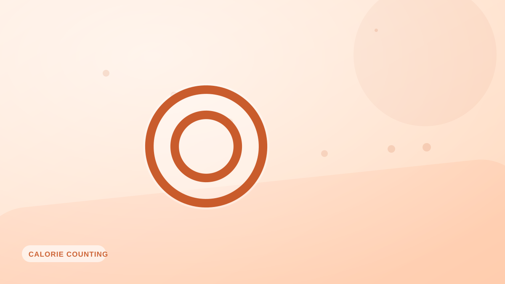

Cómo contar calorías sin pesar cada comida
>¿Sin báscula de cocina? Aún puedes registrar bien usando porciones de la mano, referencias visuales y el registro por foto. Guía práctica para estimar con criterio.

Pesar la comida es la forma más exacta de registrar, pero no siempre es práctica: restaurantes, viajes, la comida de otra persona. La buena noticia es que se puede estimar sorprendentemente bien en cuanto aprendes unos pocos puntos de referencia constantes.
El método de las porciones de la mano
Tu mano viaja contigo y guarda proporción con tu tamaño corporal, lo que la convierte en una herramienta de medida incorporada muy práctica:
- Proteína: una porción del tamaño de la palma (≈20–30 g de proteína).
- Carbohidratos: un puñado ahuecado (≈20–30 g de carbohidratos).
- Grasas: un pulgar (≈10 g de grasa).
- Verduras: un puño entero o más.
Referencias visuales útiles
Memoriza unas cuantas comparaciones cotidianas: una baraja de cartas son unos 85 g de carne, una pelota de tenis equivale más o menos a una taza, una ficha de póker es una cucharada y una pelota de golf, unas dos cucharadas. Con eso puedes calcular un plato a ojo en segundos.
Calibra de vez en cuando
Aunque no peses a diario, pesa tus alimentos habituales una o dos veces para comprobar qué tal anda tu ojo. Casi todo el mundo descubre que sus estimaciones se quedan cortas, así que una revisión periódica te mantiene honesto.
Deja que una foto haga las cuentas
Estimar es mucho más fácil cuando una herramienta interpreta el plato por ti. Hacer una foto con Fotocal te da una estimación de calorías y macros a partir de la propia imagen —sin báscula y sin buscar en bases de datos—, lo que resulta ideal para las comidas que simplemente no puedes pesar.
Busca constancia, no perfección
El objetivo de registrar sin báscula no es la precisión al gramo. Es una estimación estable y repetible en la que puedas confiar semana a semana. Si tu peso se mueve en la dirección correcta, tus estimaciones son suficientemente buenas.
Ideas clave
- Usa las porciones de la mano: palma, puñado ahuecado, pulgar y puño.
- Memoriza referencias visuales como una baraja o una pelota de tenis.
- Calibra el ojo pesando de vez en cuando tus alimentos habituales.
- El registro por foto elimina las conjeturas en comidas que no puedes pesar.